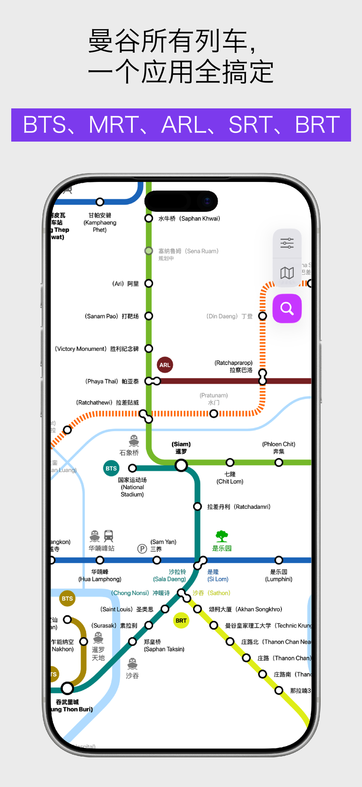
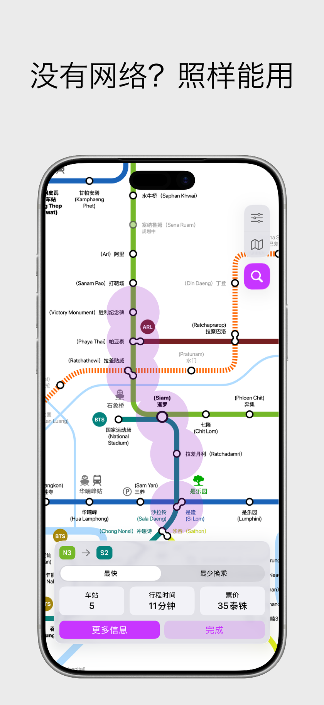
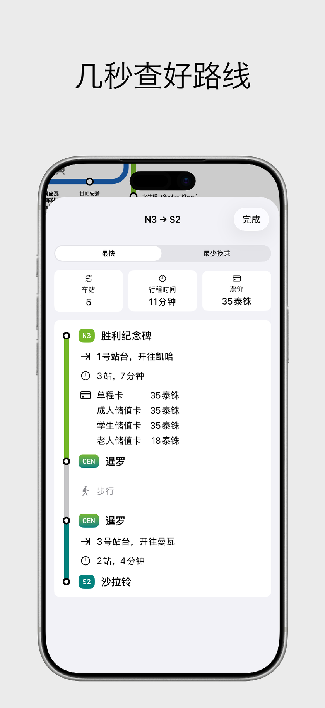
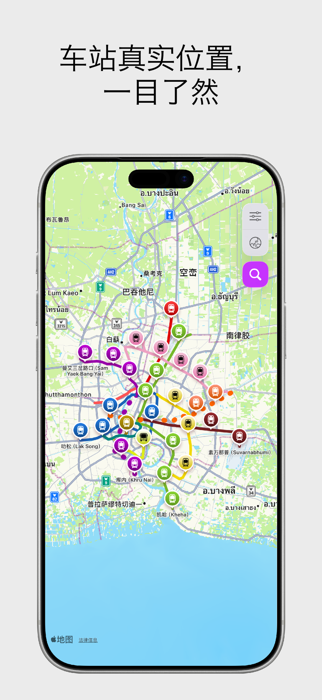

100% 离线使用
无需购买当地流量卡或开通漫游。即使在地下车站或无信号区域，线路查询与换乘计算依然毫秒级响应。
离线城市轨道交通与地铁指南





曼谷全网轨道交通完整指南。涵盖 BTS 素坤逸线/是隆线/金线、MRT 蓝线/紫线/黄线/粉红线、素万那普机场快线 ARL、SRT 红色通勤铁路及 BRT。

巴生谷及吉隆坡轨道出行必备指南。涵盖 Rapid KL 格拉那再也/安邦/大城堡轻快铁、MRT 加影线/布城线、KL 单轨、KTM 通勤铁路及 KLIA 机场特快。
无需购买当地流量卡或开通漫游。即使在地下车站或无信号区域，线路查询与换乘计算依然毫秒级响应。
即刻获取最优换乘方案、换乘站点、准确票价以及预计行程时间。
一键无缝切换清晰易读的拓扑图与结合真实城市路网的地理分布地图。
提供各车站完整班次时刻与末班车时间提醒，出行无忧。
标明各大购物中心、酒店与景点的对应车站出口，省时省力。
支持中文、英文、泰文、马来文、日文及韩文双语极速检索车站。
了解 City Metro 与单运营商官方应用及通用地图应用的优势对比
City Metro 坚守隐私原则，绝不收集、追踪或共享您的任何个人数据或出行轨迹。所有算法逻辑均在本地独立运行。
可以。City Metro 专为 100% 离线使用设计。无需 SIM 卡、境外漫游或 Wi-Fi，路线换乘规划、线路图、时刻表与车站出口信息均可完整离线使用。
支持曼谷全线（BTS 素坤逸线/是隆线/金线、MRT 蓝线/紫线/黄线/粉红线、机场快线 ARL、SRT 暗红/浅红线、BRT）以及吉隆坡全线（Rapid KL LRT、MRT 加影线/布城线、KL 单轨列车、KTM 城际列车、KLIA 机场快线、BRT）。
不同于仅覆盖自家线路且需要网络连接的单营运商官方应用（如 BTS 的 THE SKYTRAINs 或 MRT 的 Bangkok MRT），曼谷 City Metro 将曼谷所有轨道交通（BTS 素坤逸线/是隆线/金线、MRT 蓝线/紫线/黄线/粉红线、机场快线 ARL、SRT 红线及 BRT）整合在单张地图中，支持 100% 完全离线使用、跨运营商换乘与票价综合计算，以及双语车站出口指南。
City Metro 专为 100% 离线设计，无需购买当地 SIM 卡、无需境外流量漫游或 Wi-Fi 即可流畅运行，特别适合机场刚落地或地下无信号环境。此外还提供清晰的专用拓扑线路图、精确的车站出口地标指引及离线跨系统综合票价计算。
是的，City Metro 应用可在 Apple App Store 免费下载和使用。
不会。City Metro 不会收集、保存或上传您的任何个人隐私、位置轨迹或搜索历史。所有路线计算均仅在您的设备本地安全完成。
现已上架 App Store，支持 iPhone 与 iPad。